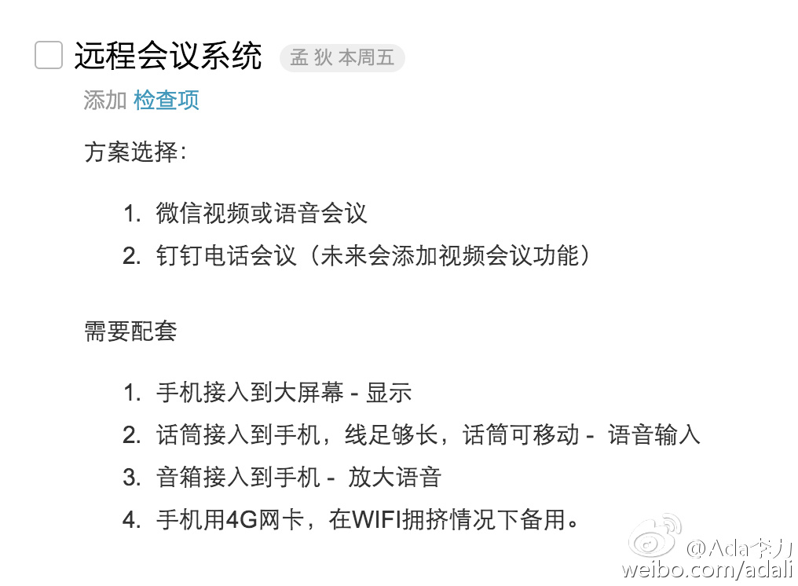

同事在办公室测试完成远程视频会议系统。基于微信平台，会议室一台PC电脑Windows操作系统（微信电脑版使用），接电视大屏，接独立麦克风，接独立音响。远程终端使用任何手机都可。@Ada李力:#创业#一直在找适合的远程会议系统。刚刚意识到，制约远程会议应用的最大问题是网速，工具已经不是问题。手机上就有很多免费好用的远程会议工具。 
Nod //@舒服自由人:从技术上说，绑定银行卡已经等于身份认证，因为银行卡是实名到不能实名的了。不是本人知道密码的，没手机的怎么绑定呀？你要身份信息应该自己跟银行协商去，不要给用户重复找麻烦。哪怕是偶然丢失被盗的卡或手机，用户自己也会去挂失呀。普遍来说，绑定过银行卡就是认证@舒服自由人:看到微信通知要认证身份的消息，感到挺没意思的——就是坐个车买个零食随手用个钱包，还得给你传个身份证。当初支付宝认证是为了开店或是大额转账做的，别的绑定银行卡已经算很给面子了，还得再把身份证给你看，我宁可不用了
#创业#初略估算了下，销售收入的27%都缴了税，增值税，所得税等。再扣去运营成本和营销费用...... ---- 这么一算，对那些利润率低的产品，真是一点兴趣都木有了哇，先别说产品好不好了。不能赚钱的产品，再好跟我也没关系呀。